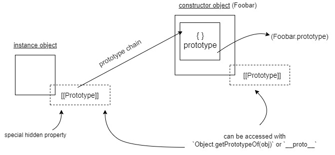

One of the concepts that I was having some difficulty wrapping my head around when I started learning JavaScript was prototypal inheritance and especially the difference between prototype and __proto__ and [[Prototype]] and Object.getPrototypeOf(). After a bunch of reading and experimenting, I came up with the following diagram to get a better understanding of the prototypal inheritance nature of JavaScript, but more importantly, the difference between the different "prototype"s.

Note: The only straight line used is to represent the prototype chain. Curved arrows are used for describing the properties and adding a little more context.
[[Prototype]] and prototype
In the diagram, we have a constructor function and an instance of it, called Foobar and instance, respectively.
The constructor will have a property called prototype, which is an object and is used as a blueprint for any instances created by it. The constructor and its instances will also have a special hidden property called [[Prototype]], which is linked to their respective constructors' prototype property.
When you call the constructor with the new keyword prepended (eg. new Foobar()), prototype will become a blueprint for the instance object you just created and it specifies that [[Prototype]] be assigned to that instance.
Note that JavaScript code on the page does not have direct access to hidden properties such as [[Prototype]]; hidden properties are denoted by the double square brackets wrapping the keyword. This is added by the JavaScript engine (such as the V8) and is only accessible in that environment.
However, for the sake of our mental model, we can think of it as instance.[[Prototype]] being linked to Foobar.prototype. At the same time, Foobar.[[Prototype]] will point to the prototype property of its constructor, which is Function.prototype. Keep in mind that instance does not have a prototype property. Why? Because it's not a constructor.
To summarize the above, a constructor object will have a hidden [[Prototype]] property that points to its constructor and a non-hidden prototype object property that becomes the blueprint for any instances you create.
Its instance will have also have a hidden [[Prototype]] property that points to its parent/constructor but won't have a prototype property unless it's used as a constructor.
As you can see, an instance's hidden [[Prototype]] property points to its constructor's prototype property. At the same time, this constructor's [[Prototype]] points to its parent constructor's prototype, and so on. These links create a chain - this is called the prototype chain.
Accessing [[Prototype]]
So what is __proto__ then? Recall that [[Prototype]] is a hidden property and you can't access it with your JavaScript code. So, many browsers implemented another property called __proto__, which exposes the value of the hidden [[Prototype]] of an object.
However, using __proto__ is often discouraged. Instead, there's another way to access [[Prototype]], which is to use the method Object.getPrototypeOf(). If you need to set the [[Prototype]] of an object to something else, you can use the Object.setPrototypeOf() method.
I hope this article helped clarify the different "prototype"s a little. This article is in no way comprehensive and only goes over a few parts related to JavaScript's prototypal inheritance. If you'd like to read more about inheritance and the prototype chain, this MDN doc is a good place.
I'd love to hear if you have any comments. You can reach out to me on X.